CytoTable¶
 Diagram showing data flow relative to this project.
Summary¶
CytoTable enables single-cell morphology data analysis by cleaning and transforming CellProfiler (.csv or .sqlite), cytominer-database (.sqlite), and DeepProfiler (.npz) output data at scale.
CytoTable creates parquet files for both independent analysis and for input into Pycytominer.
The Parquet files will have a unified and documented data model, including referenceable schema where appropriate (for validation within Pycytominer or other projects).
Installation¶
Install CytoTable with the following command:
pip install git+https://github.com/cytomining/CytoTable.git
Contributing, Development, and Testing¶
Please see contributing.md for more details on contributions, development, and testing.